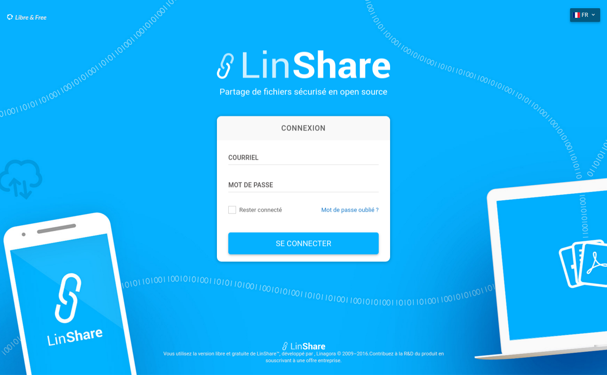
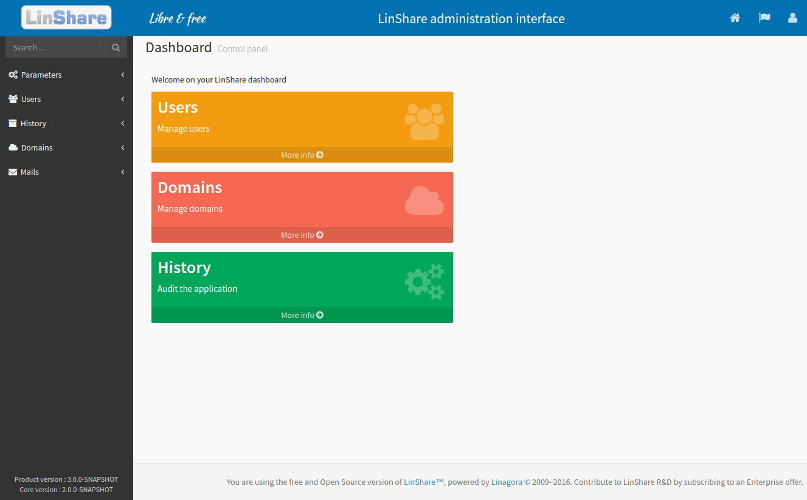
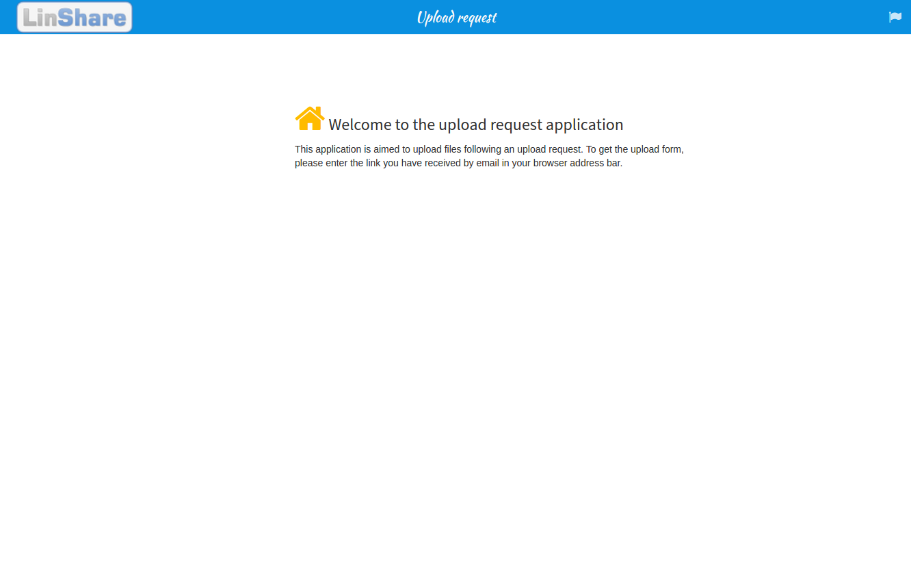

Toggle navigation
Menu
Services
Set up
Troubleshoots
Welcome to LinShare Docker
This page is designed to provide you help, documentation and all URL access to every deployed services
Get started
Services
You need to configure LinShare to add a ldap connection and a domain to use it with your users. See Admin interface.

User interface
set up

Admin interface
set up

Upload request template
set up